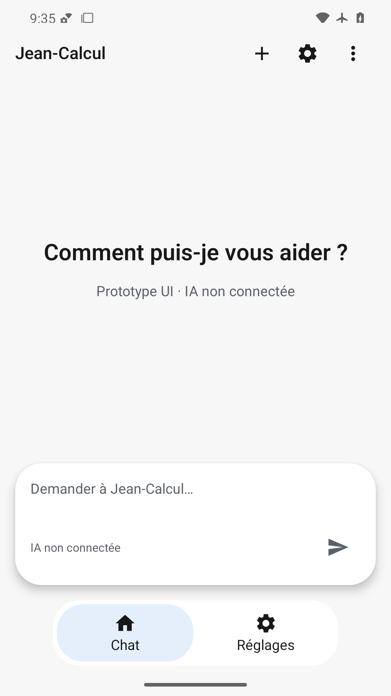
En-tête complet, invitation centrée, indication de saisie visible dans la capsule blanche ; les deux destinations restent dégagées de la barre système.
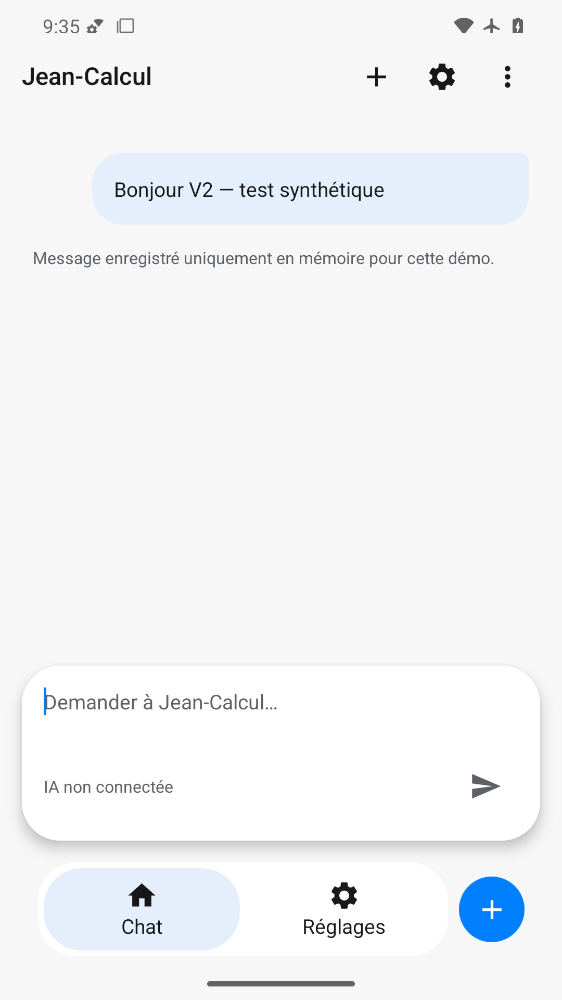
Bulle sortante bleutée et avertissement mémoire lisibles ; champ vidé avec indication visible, navigation complète et action nouvelle conversation bleue.
Invitation restaurée après effacement ; indication du champ et destinations Chat/Réglages visibles, aucun ancien message.
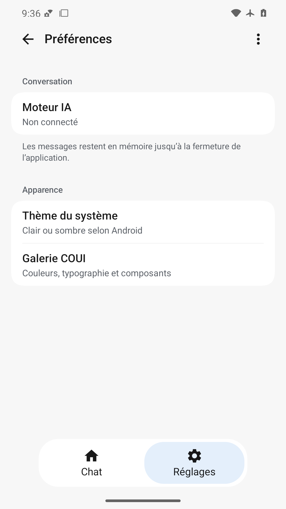
Deux groupes blancs et leurs résumés sont lisibles ; retour, menu et sélection Réglages visibles, aucun chevauchement des insets.
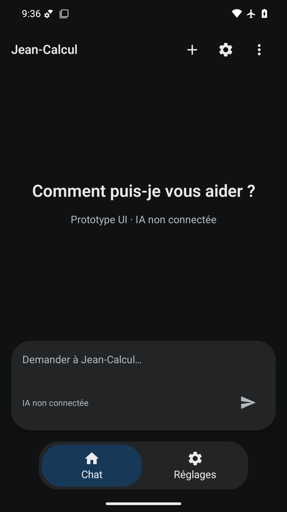
Fond noir, surfaces anthracite, texte clair et sélection bleu sombre restent distinguables ; indication du champ et icônes présentes.
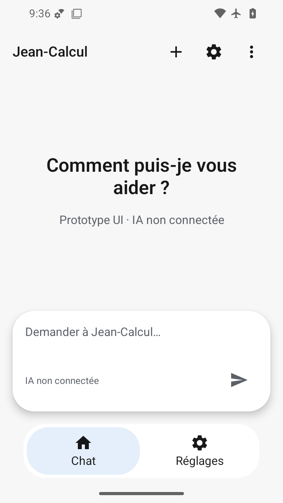
Invitation répartie sur deux lignes sans coupe ; capsule, envoi, navigation et en-tête tiennent dans le petit écran.
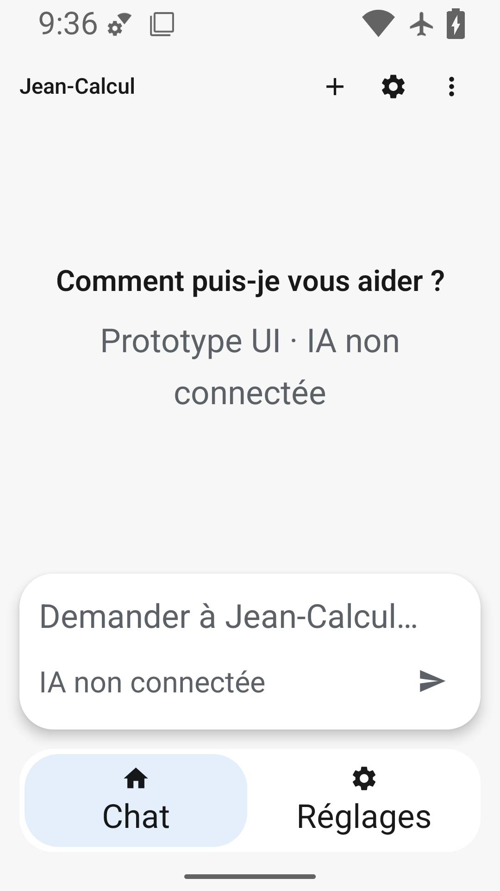
Corps, indication de saisie et destinations agrandis restent lisibles sans recouvrement ; titre Toolbar/PageTitle reste fixe, limite alpha7 documentée.
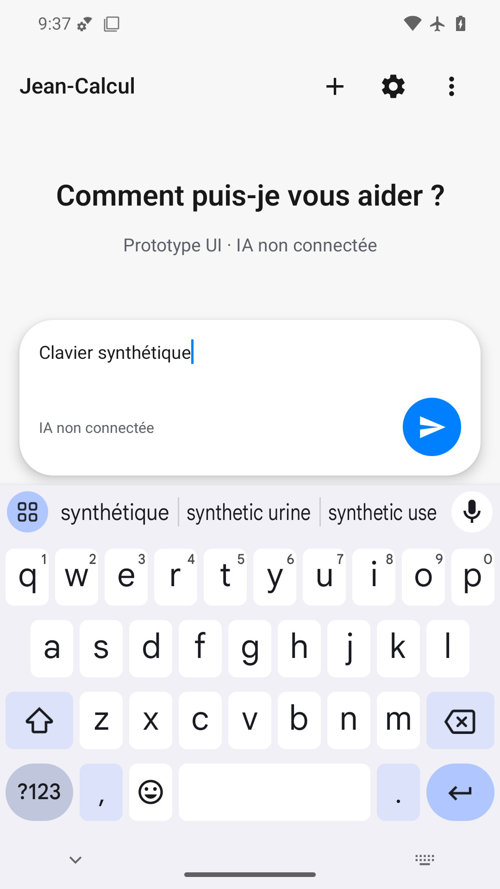
Clavier réellement visible ; en-tête Jean-Calcul et ses trois actions restent peints. Texte saisi et envoi bleu au-dessus du clavier, sans recouvrement.
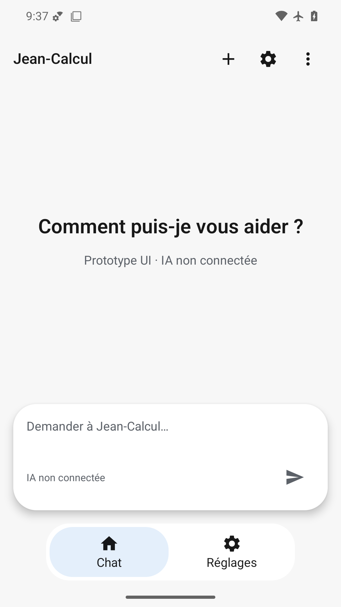
État final complet avec indication de saisie et navigation lorsque les animations Android sont désactivées ; une image statique ne juge pas la fluidité.
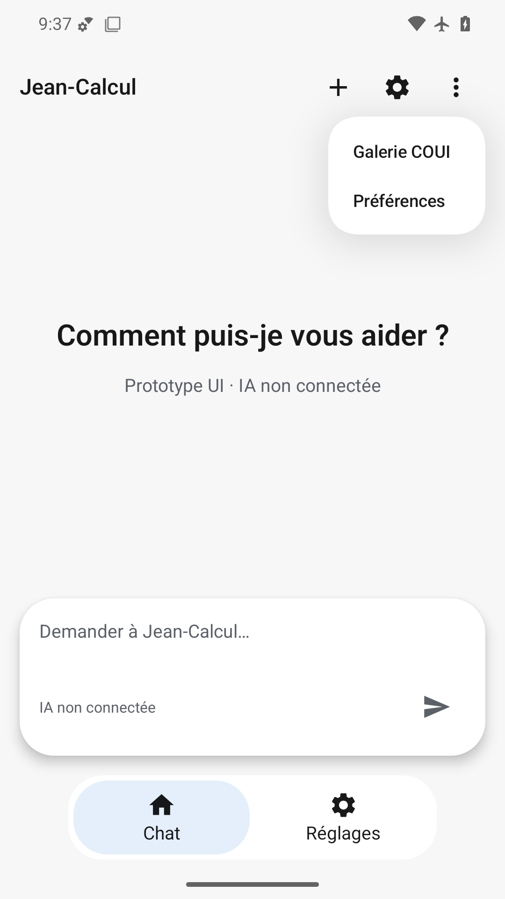
Menu flottant COUI blanc lisible, deux entrées distinctes ; champ et navigation restent présents en arrière-plan.
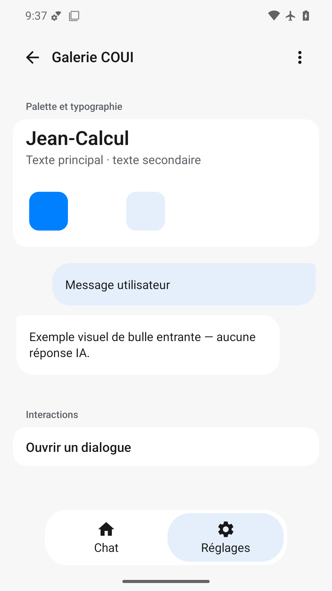
Palette, typographie, deux bulles explicitement illustratives et action dialogue lisibles ; icônes de navigation présentes. Nuancier blanc peu distinct du groupe blanc, limite mineure.
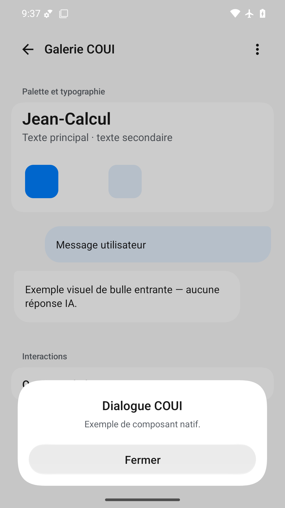
Dialogue COUI au-dessus du fond assombri, titre et description lisibles ; bouton Fermer large, marges inférieures respectées.
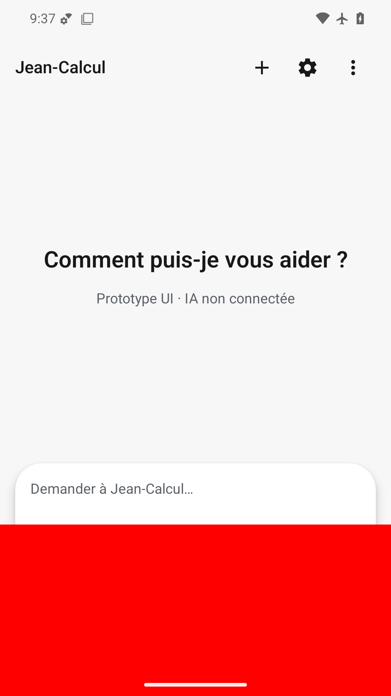
Défaut volontaire détecté : grand rectangle rouge opaque en bas, masquant le bas de la capsule, envoi et navigation. État inutilisable.